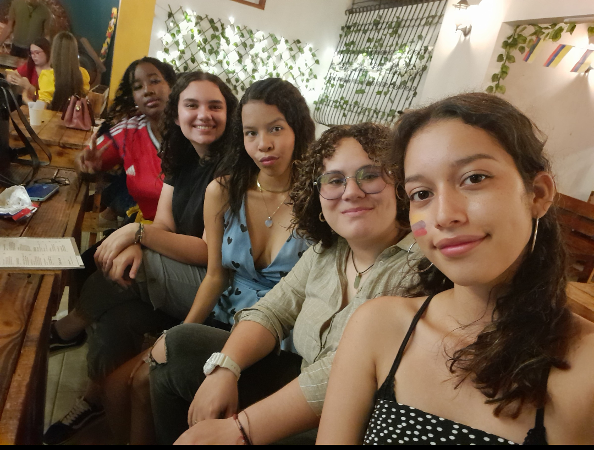
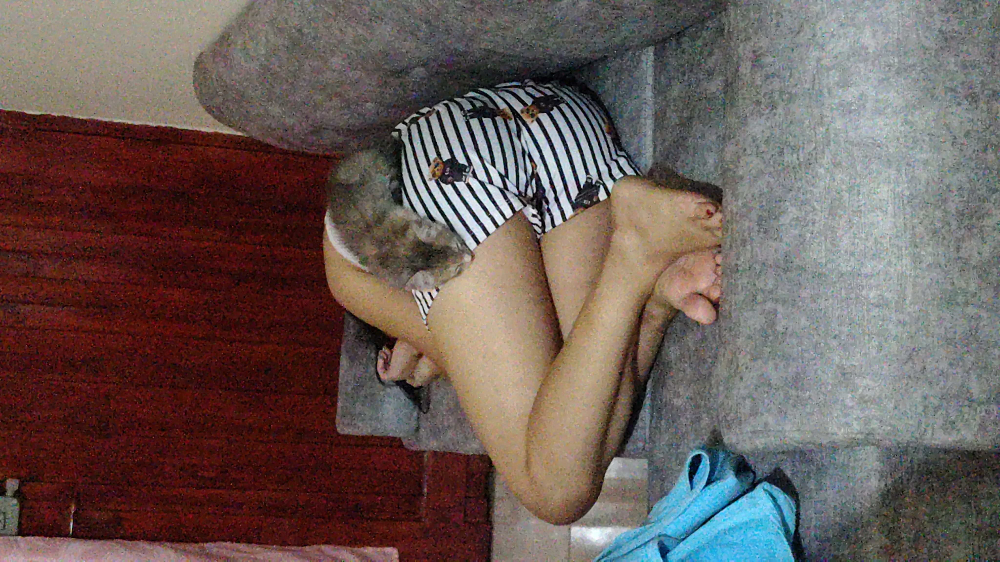

Aquí guardamos los momentos más divertidos y locos que hemos vivido juntas. Haz clic en un título para leer la historia:
Hay fechas que se quedan grabadas para siempre, y para nosotras fue el 14 de julio de 2024. Aunque cada una ya se conocía por separado, ese día el destino y una final de la Copa América decidió juntarnos a las cuatro por primera vez. Todo se dio gracias a Linda Reyes y Valeria Domínguez, quienes presentaron a Wendy Marulanda y Linda Tamayo. Nos reunimos en Garde House con la ilusión de vivir una gran fiesta del fútbol y ver a la Selección alzar la copa. Aunque el partido terminó con un resultado triste y nos quedamos achicopadas, el universo nos tenía una victoria camuflada: ese día perdimos la final,pero nos ganamos las unas a las otras para siempre. ¡Y así nació este parche!

Una borrachera ni la HPTA.

Escribe aquí otra anécdota diferente. Puedes copiar y pegar este bloque cuantas veces quieras si tienen más historias.